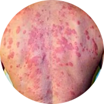
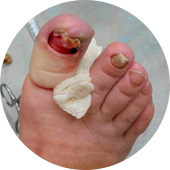
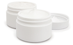
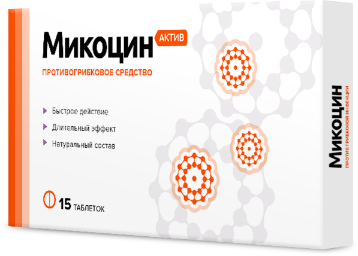
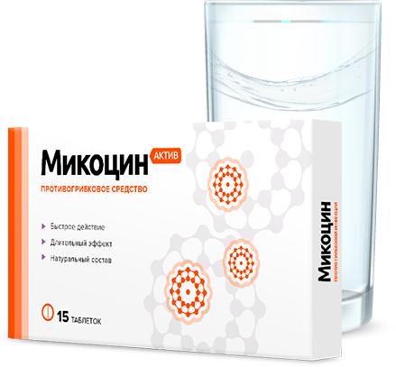
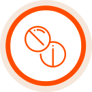
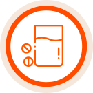

Грибок – это опасная инфекция
которая угрожает вам и вашим близким, ведь с каждым днем грибок приводит к:

Сложным формам аллергии
1
Может появится сильная реакция
на на привычную пищу, одежду,
средства гигиены

Потере ногтя и ампутации пальца
2
После полного разрушения ногтя
грибок распространяется на палец,
что приводит к его ампутации
Тяжелому поражению внутренних органов
3
Может привести к повреждениям
мозга, слепоте, отказу печени, почек
и сердца
Статистика: каждые 60 секунд врачи диагностируют опасные поражения внутренних органов,
вызванные грибком, у 1-го пациент
Почему большинство средств против грибка малоэффективны
Чудо-средства
Обещают, что избавят от грибка меньше, чем за месяц, хотя это невозможно.
Но
Ноготь – это роговой слой кожи.
Он не имеет живых клеток. Часть ногтя, которая уже поражена грибком, не может выздороветь
до полного его отрастания. Единственный способ вылечить грибок – подавлять его распространение все время,
пока ноготь не отрастет заново.
Для этого требуется 4-6 месяцев.
Наружные средства
Способны устранить внешние проявления грибка.
(кремы, лаки, пластыри)
Но
Очаг заражения находится
под ногтевой пластиной, а наружные средства не способны его достичь - они действуют только на на верхнем слое ногтя, поэтому не способны избавить от грибка. Для повышения их эффективности рекомендуется спиливать ноготь полностью,
но это больно, некрасиво
и совершенно не дает гарантий выздоровления.
Внутренние средства
Убивают грибковую инфекцию
в организме.
(таблетки, саше, капли)
Но
Могут подействовать только
(6 - 8 месяцев). За это время внутренние средства в 93%
случаев наносят серьезный
ущерб печени, вызывают сыпь, отеки, диарею, рвоту. К тому же, каждое средство эффективно
только против одной группы
грибка из 4000 видов.
ВЫВОД:
!
Даже если вы используете наружные и внутренние средства одновременно, это не гарантирует
избавления от грибка: они могут конфликтовать между собой по составу и блокировать действие
друг друга или быть неэффективными против вашего типа грибка.
Почему таблетки Микоцин от грибка так эффективны?
Другие средства не дают полную защиту от грибковых инфекций и могут быть опасны

Кремы и мази
Не лечат грибок, потому что не проникают в ногтевую пластину. Только временно избавляют от симптомов инфекций. Могут вызвать сильную аллергию
и раздражения на коже.
Народные методы
Помогают только в редких случаях. Могут причинить вред коже
и ногтям. Не предотвращают повторные заражения грибком.

Таблетки
Действуют против всех видов грибков. Быстро снимают неприятные
симптомы и уничтожают инфекцию изнутри вне зависимости от области
заражения грибком. Надолго
защищают от повторных заражений.
Зачем лечить сложнее, дольше и дороже, если есть Микоцин?
Как применять Микоцин


Принимать по 1 таблетке
утром и вечером

Запивать стаканом воды
Курс – от 30 дней